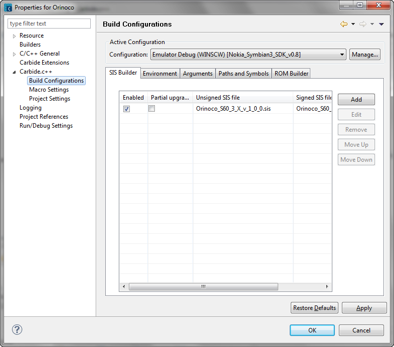

TheProperties for <project_name> window allows you to change a project's build configurations, macros, and other project settings.
To change the settings for a project, right-click the project from the Project Explorer or Symbian Project Navigator views, and choose Properties from the context menu. The Properties for <project_name> window then show all the project settings. If you alter the settings, then the settings are applied as defaults for all files in the project.
The Carbide.c++ panels include:

Figure 1. Project for project_name dialog
To change the settings only for a particular file, right-click the file from the Project Explorer, C/C++ Project, or Symbian Project Navigator views, and choose Properties from the context menu. The Properties for <file_name> window shows the settings that are relevant to that file.